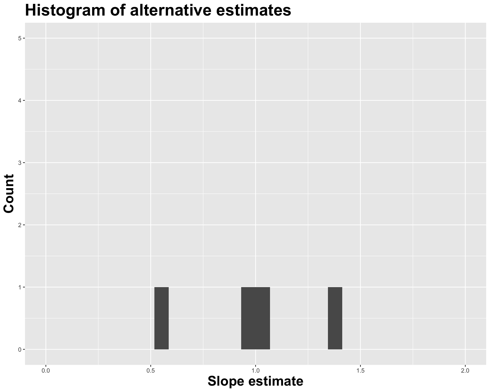
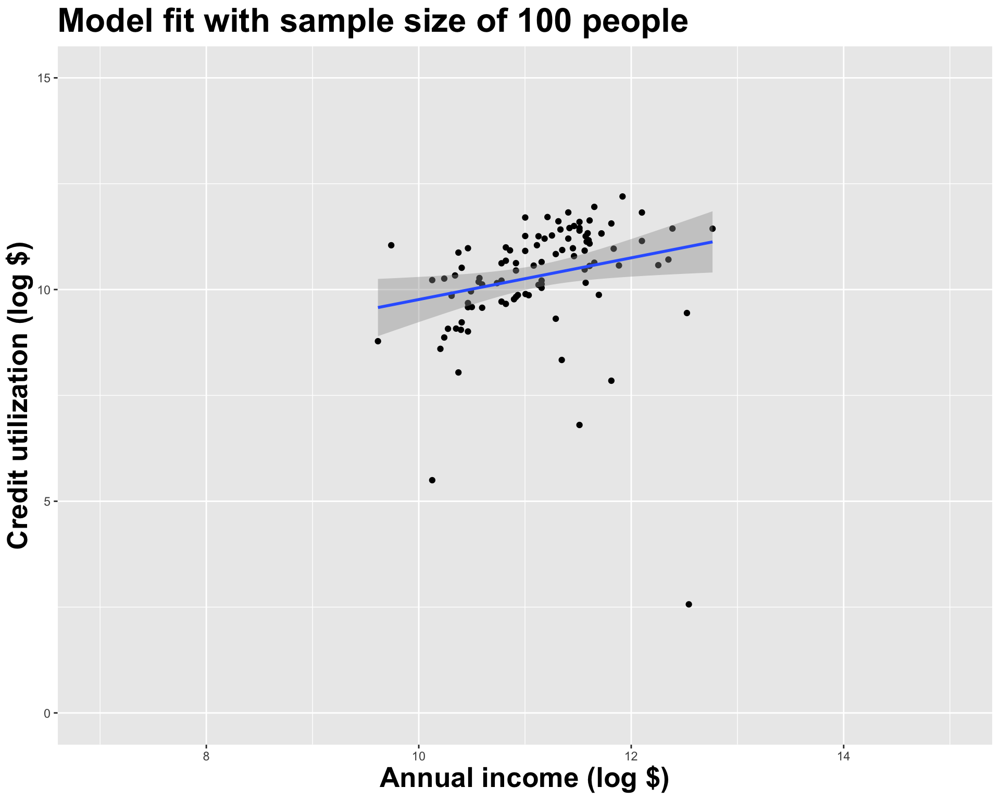
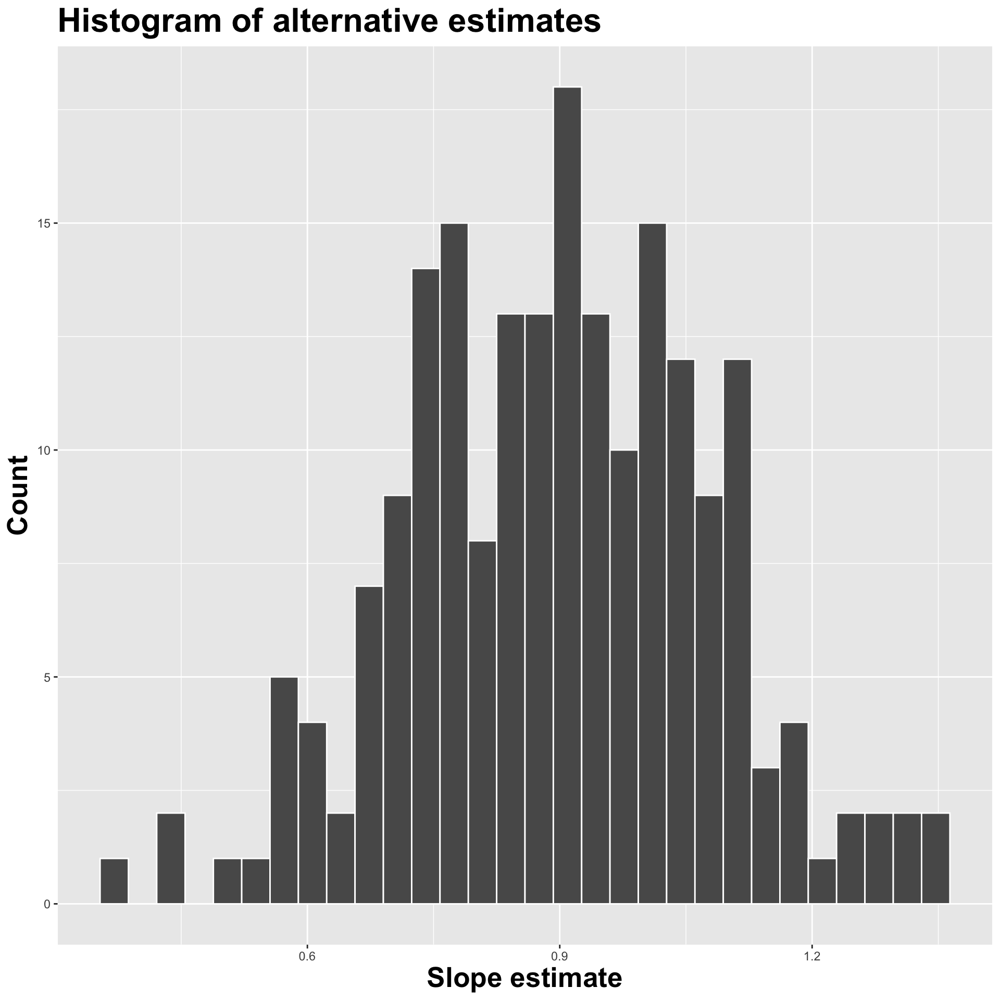
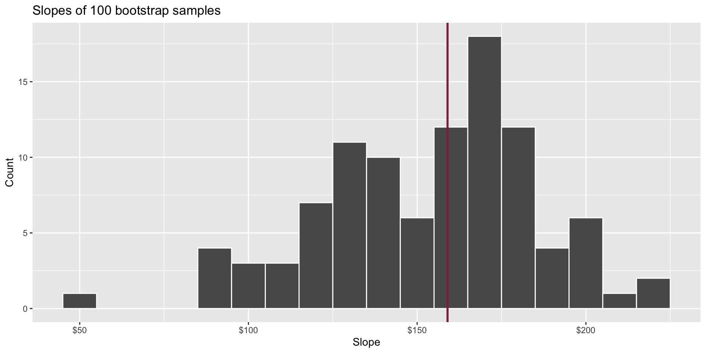

Uncertainty quantification
Lecture 19
John Zito
Duke University
STA 199 Spring 2025
2025-04-01
While you wait…
Go to your
aeproject in RStudio.Make sure all of your changes up to this point are committed and pushed, i.e., there’s nothing left in your Git pane.
Click Pull to get today’s application exercise file: ae-15-duke-forest-bootstrap.qmd.
Wait till the you’re prompted to work on the application exercise during class before editing the file.
One more month to go
Today: confidence intervals;
Thursday 4/3: hypothesis testing;
Friday 4/4: Milestone 3 (show “signs of life”) due;
Monday 4/7: submit final lab, Midterm 2 review;
Tuesday 4/8: more statistical inference;
Thursday 4/10: midterm 2;
Friday 4/11: submit peer eval 3;
Monday 4/14: turn-in take-home, complete Milestone 4;
Tuesday 4/15: more statistical inference
Thursday 4/17: prettifying your projects
Monday 4/21: project work period
Tuesday 4/22: Farewell!
Wednesday 4/23: submit final project
Monday 4/28: submit peer eval 4
Tuesday 4/29: final exam
Everyone can end the semester strong
Over 60% of the final course grade has yet to be counted:
- 5 - 6 more AEs;
- Labs 5, 6, 7;
- Midterm 2 (20%);
- Final Project (20%);
- Final exam (20%).
And we drop the lowest lab, 30% of the AEs, and replace a low in-class midterm with a better final.
Goal
Find range of plausible values for the slope using bootstrap confidence intervals.
A quick demonstration
Recall the openintro::loans_full_schema data frame:
each row is an approved loan applicant;
-
the columns contain financial info about that person, including…
- annual income (in $);
- amount of non-mortgage debt outstanding (in $).
What would you guess is the direction of association between these two variables?
Model fit with five observations
(I just took logs to make the picture prettier.)
Double the sample size

Double the sample size again
Double the sample size again
Double the sample size again
Double the sample size again
Double the sample size again
Double the sample size again
Double the sample size again
Double the sample size yet again
Double the sample size one more time
Use all the data we have
What did we notice?
As the sample size grew, the best fit line stabilized;
As the sample size grew, the grey uncertainty band shrank;
As the sample size grew, we observed a larger range of income values, anf the computer displayed more of the line;
-
As the sample size grows, the picture the data paint becomes clearer:
- positive relationship;
- linear relationship;
- pretty strong
A silly question
Which would you rather have for your data analysis? 5 people in your dataset or 9947? Why?
The bottom line, at the top
We do not know what the “true” line is;
Our estimates are a best guess based on noisy, incomplete, imperfect data;
The more data we have, the more “certain” and “reliable” the estimates are;
What do we mean by “uncertainty” here?
Sampling uncertainty
Fact: different data set -> different estimates;
-
How much would our estimate vary across alternative datasets?
- If the answer is “a lot,” uncertainty is high, and our estimates are not super reliable;
- If the answer is “a little,” uncertainty is low, and maybe we can take our estimates to the bank;
Here’s one dataset we could have seen
Here’s another
Here’s yet one more

Different data set -> different estimates
These tiny data sets can’t even agree on if the line should slope up or down. Uncertainty is high, hence the large bands.
If we repeat the process with a larger sample size, things are more stable
Alternative 1
Alternative 2
Alternative 3
Let’s visualize how the estimates vary
Different data set -> different estimates
# A tibble: 2 × 2
term estimate
<chr> <dbl>
1 (Intercept) 4.27
2 log_inc 0.553Different data set -> different estimates
# A tibble: 2 × 2
term estimate
<chr> <dbl>
1 (Intercept) -4.63
2 log_inc 1.35Different data set -> different estimates
# A tibble: 2 × 2
term estimate
<chr> <dbl>
1 (Intercept) -1.14
2 log_inc 1.04Different data set -> different estimates
# A tibble: 2 × 2
term estimate
<chr> <dbl>
1 (Intercept) -0.288
2 log_inc 0.960
Different data set -> different estimates

# A tibble: 2 × 2
term estimate
<chr> <dbl>
1 (Intercept) 4.84
2 log_inc 0.492Different data set -> different estimates
# A tibble: 2 × 2
term estimate
<chr> <dbl>
1 (Intercept) 3.20
2 log_inc 0.654You get the idea
Variation in estimates across alternative datasets

The amount of variation in the histogram tells us something about the uncertainty, and gives us a range of likely values.
Today’s application
Data: Houses in Duke Forest
- Data on houses that were sold in the Duke Forest neighborhood of Durham, NC around November 2020
- Scraped from Zillow
- Source:
openintro::duke_forest

Goal: Use the area (in square feet) to understand variability in the price of houses in Duke Forest.
Exploratory data analysis
Modeling
df_fit <- linear_reg() |>
fit(price ~ area, data = duke_forest)
tidy(df_fit) |>
kable(digits = 2) # neatly format table to 2 digits| term | estimate | std.error | statistic | p.value |
|---|---|---|---|---|
| (Intercept) | 116652.33 | 53302.46 | 2.19 | 0.03 |
| area | 159.48 | 18.17 | 8.78 | 0.00 |
-
Intercept: Duke Forest houses that are 0 square feet are expected to sell, for $116,652, on average.
- Is this interpretation useful?
- Slope: For each additional square foot, we expect the sale price of Duke Forest houses to be higher by $159, on average.
From sample to population
For each additional square foot, we expect the sale price of Duke Forest houses to be higher by $159, on average.
- This estimate is valid for the single sample of 98 houses.
- But what if we’re not interested quantifying the relationship between the size and price of a house in this single sample?
- What if we want to say something about the relationship between these variables for all houses in Duke Forest?
Statistical inference
Statistical inference provide methods and tools so we can use the single observed sample to make valid statements (inferences) about the population it comes from
For our inferences to be valid, the sample should be random and representative of the population we’re interested in

Inference for simple linear regression
Calculate a confidence interval for the slope, \(\beta_1\) (today)
Conduct a hypothesis test for the slope, \(\beta_1\) (Thursday)
Confidence interval for the slope
Confidence interval
- A plausible range of values for a population parameter is called a confidence interval
- Using only a single point estimate is like fishing in a murky lake with a spear, and using a confidence interval is like fishing with a net
- We can throw a spear where we saw a fish but we will probably miss, if we toss a net in that area, we have a good chance of catching the fish
- Similarly, if we report a point estimate, we probably will not hit the exact population parameter, but if we report a range of plausible values we have a good shot at capturing the parameter
Confidence interval for the slope
A confidence interval will allow us to make a statement like “For each additional square foot, the model predicts the sale price of Duke Forest houses to be higher, on average, by $159, plus or minus X dollars.”
Should X be $10? $100? $1000?
If we were to take another sample of 98 would we expect the slope calculated based on that sample to be exactly $159? Off by $10? $100? $1000?
The answer depends on how variable (from one sample to another sample) the sample statistic (the slope) is
We need a way to quantify the variability of the sample statistic
Quantify the variability of the slope
for estimation
- Two approaches:
- Via simulation (what we’ll do in this course)
- Via mathematical models (what you can learn about in future courses)
-
Bootstrapping to quantify the variability of the slope for the purpose of estimation:
- Bootstrap new samples from the original sample
- Fit models to each of the samples and estimate the slope
- Use features of the distribution of the bootstrapped slopes to construct a confidence interval
Bootstrap sample 1

Bootstrap sample 2

Bootstrap sample 3

Bootstrap sample 4

Bootstrap sample 5
so on and so forth…
Bootstrap samples 1 - 5

Bootstrap samples 1 - 100

Slopes of bootstrap samples
Fill in the blank: For each additional square foot, the model predicts the sale price of Duke Forest houses to be higher, on average, by $159, plus or minus ___ dollars.
Slopes of bootstrap samples
Fill in the blank: For each additional square foot, we expect the sale price of Duke Forest houses to be higher, on average, by $159, plus or minus ___ dollars.

Confidence level
How confident are you that the true slope is between $0 and $250? How about $150 and $170? How about $90 and $210?

95% confidence interval

- A 95% confidence interval is bounded by the middle 95% of the bootstrap distribution
- We are 95% confident that for each additional square foot, the model predicts the sale price of Duke Forest houses to be higher, on average, by $90.43 to $205.77.
Application exercise
ae-15-duke-forest-bootstrap
Go to your ae project in RStudio.
If you haven’t yet done so, make sure all of your changes up to this point are committed and pushed, i.e., there’s nothing left in your Git pane.
If you haven’t yet done so, click Pull to get today’s application exercise file: ae-15-duke-forest-bootstrap.qmd.
Work through the application exercise in class, and render, commit, and push your edits.
Computing the CI for the slope I
Calculate the observed slope:
Computing the CI for the slope II
Take 100 bootstrap samples and fit models to each one:
set.seed(1120)
boot_fits <- duke_forest |>
specify(price ~ area) |>
generate(reps = 100, type = "bootstrap") |>
fit()
boot_fits# A tibble: 200 × 3
# Groups: replicate [100]
replicate term estimate
<int> <chr> <dbl>
1 1 intercept 47819.
2 1 area 191.
3 2 intercept 144645.
4 2 area 134.
5 3 intercept 114008.
6 3 area 161.
7 4 intercept 100639.
8 4 area 166.
9 5 intercept 215264.
10 5 area 125.
# ℹ 190 more rowsComputing the CI for the slope III
Percentile method: Compute the 95% CI as the middle 95% of the bootstrap distribution:
Precision vs. accuracy
If we want to be very certain that we capture the population parameter, should we use a wider or a narrower interval? What drawbacks are associated with using a wider interval?

Precision vs. accuracy
How can we get best of both worlds – high precision and high accuracy?
Changing confidence level
How would you modify the following code to calculate a 90% confidence interval? How would you modify it for a 99% confidence interval?
Changing confidence level
## confidence level: 90%
get_confidence_interval(
boot_fits, point_estimate = observed_fit,
level = 0.90, type = "percentile"
)# A tibble: 2 × 3
term lower_ci upper_ci
<chr> <dbl> <dbl>
1 area 104. 212.
2 intercept -24380. 256730.## confidence level: 99%
get_confidence_interval(
boot_fits, point_estimate = observed_fit,
level = 0.99, type = "percentile"
)# A tibble: 2 × 3
term lower_ci upper_ci
<chr> <dbl> <dbl>
1 area 56.3 226.
2 intercept -61950. 370395.Recap
Population: Complete set of observations of whatever we are studying, e.g., people, tweets, photographs, etc. (population size = \(N\))
Sample: Subset of the population, ideally random and representative (sample size = \(n\))
Sample statistic \(\ne\) population parameter, but if the sample is good, it can be a good estimate
Statistical inference: Discipline that concerns itself with the development of procedures, methods, and theorems that allow us to extract meaning and information from data that has been generated by stochastic (random) process
We report the estimate with a confidence interval, and the width of this interval depends on the variability of sample statistics from different samples from the population
Since we can’t continue sampling from the population, we bootstrap from the one sample we have to estimate sampling variability